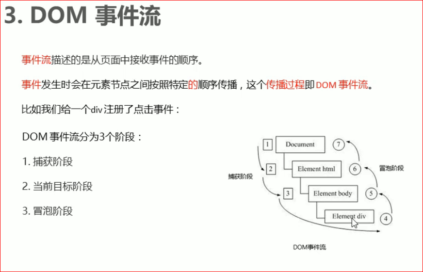

DOM事件流: 事件发生时会在元素节点之间按照特定的顺序传播, 这个传播过程就是DOM事件流
注意:
js代码只能执行 捕获或冒泡 其中的一个阶段(要么捕获阶段, 要么冒泡阶段)
只能得到冒泡阶段的事件: onclick、attachEvent
没有 冒泡阶段: 如: onblur、onfocus、onmouseenter、onmouseleave
addEventListener('事件类型', 回调函数, 参数3)
参数3: 如果是 true, 表示在事件捕获阶段调用回调函数
参数3: 如果是 false(不写就是默认false), 表示在事件冒泡阶段调用回调函数
例如:
虽然只是点击的中间蓝色div, 但是黄色div包含蓝色div, 根据事件DOM流的三个阶段,只要黄色的div绑定了事件就会响应